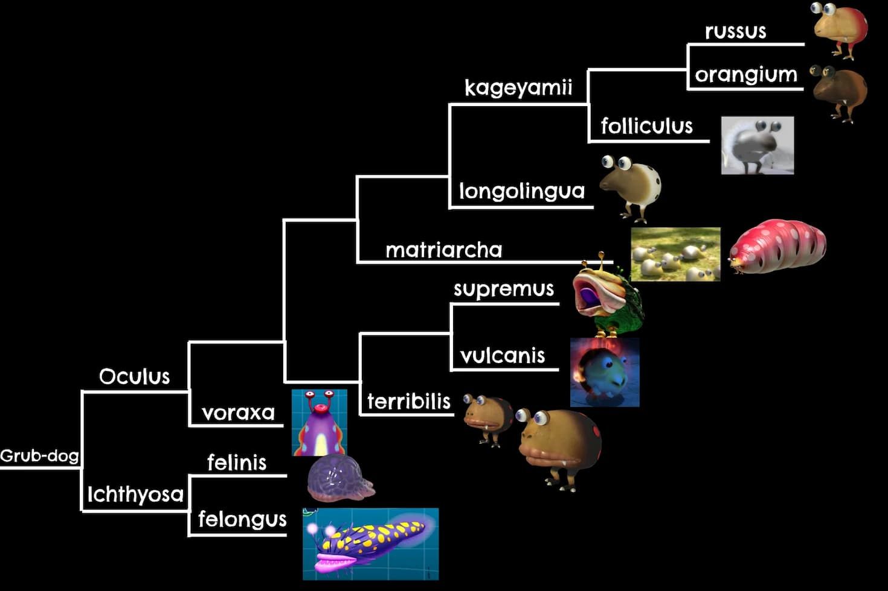
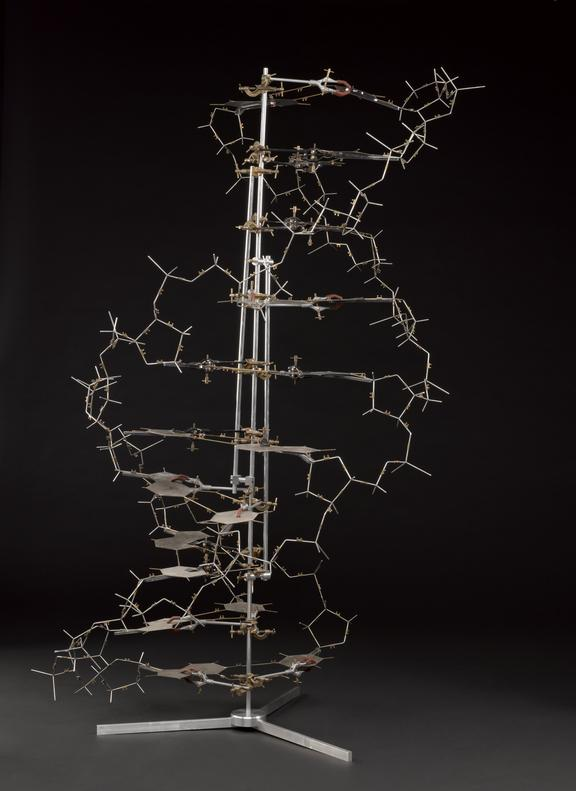
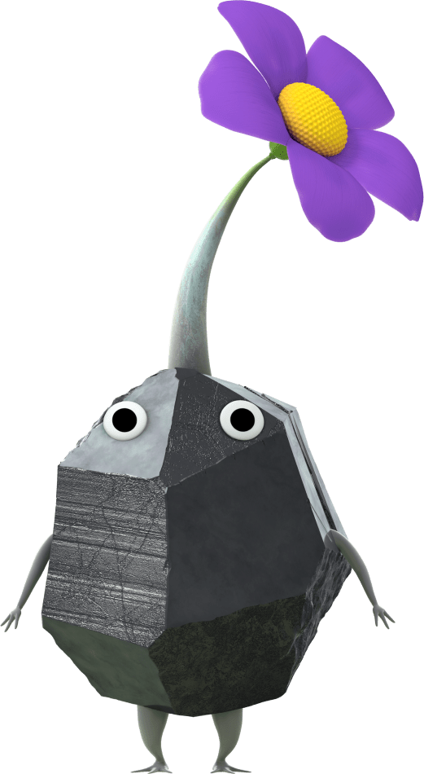

My name is Carter Cox or or to overexaggerate, Captain Carter, an employee of the Hocotate Freight company.
Anyways, what I'm talking about today is my project about DNA and how we replecated an experiment that changed it and the topic of genetics forever. But first you need to know what exactly genetics are.
Okay before actually get into the fun part, we first need to understand what exactly we're doing. Genetics is basically in a nutshell the organization of an organism's dna code which helps break them down into which is related to what. Let's look at an example, the common Bulborb (a fictional species from Pnf-404) despite it's "appeeling" look, they're just as genetically divirse as humans which gives them many unique forms like the Bulbear, the Whiptounge Bulborb and Fiery Bulblax. Dna was known about already but the true shape of DNA was discovered by Rosalind Franklin who's studies were stolen by Watson and Crick who made the models on how Dna could've worked. Of course they were wrong initally as they thought it worked like a flat puzzle until they found out how the structure really was arranged.

a evolutionary branch of the Grub-dogs that shows their genetic variety.

Watson and Crick's Dna model
Okay so now we've got the background out of the way we can finally talk about the actual experiment the things we used for the experiment.
The first thing we did is extract our Dna from our cheeks in order to put in the we used a machine called PCR to find and copy Dna.which it takes a tiny bit of Dna and makes millions of copies of a specific part of it. We do this by carefully heating and cooling the mixture to separate the Dna strands, then attaching small pieces called primers that find the exact spot we want to copy. Next, the Dna polymerase enzyme builds new Dna strands, doubling the amount each time. After several cycles, we end up with lots of copies of the target Dna. after copying the DNA using PCR, we made a special gel called an agarose gel. This gel acts like a trap for DNA. We then used a process called electrophoresis, which sends a electric current through the gel. Since DNA is negatively charged, it moves through the gel towards the positive side. Smaller pieces of DNA travel faster and farther, while larger pieces stay closer to where they started. By doing this, we can see and compare our DNA samples. This whole process helps us visualize the Dna we've copyed to understand its size and quantity. Once that's over with we put our gel under a blue light to make the Dna more visible, afterwards we take a photo of the Dna and put it into photoshop and we line up where our dna strands moved most and we typed it onto a chart to identify which length we matched up with.
After measuring my Dna in photoshop my base count was about 844 and 604 in which the closest people around my count were Sami, Kayser, Jonathon and Esmatullah. Surprisingly none of them were in my ethnicity group (african american), Kayser is Latino/Hispanic, Jonathon is White and the other two are Middleastern/North African. But also surprisingly matvhing with someone with completely different ethic group is actually normal as most of the other people had 0 matches or at most 1 or 2 which goes to show how diverse our genetic pools are. And people who don't look related could always be when it comes to genetics.
I feel like I mastered the art of creativity and innovation, Mostly because I always find a way to help others and be very creativly inclined like like putting my intrests in my project (seriously i've put 4 different pikmin references in this page alone) but somehow relating it to my project like in this case genetics as well as the stop motion video as I love to draw and we did ours in marker doodles. One more thing I did was to correctly do the procedure for my Dna to be measurable which was the main objective in the experiment.

In progress shot of stop motion flim.

I don't have an actual reason for this I just wanted to put this here.